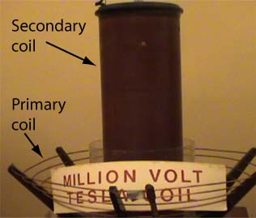

Tesla Coil
High voltage discharges having an appearance similar to lightning can be obtained from a properly designed Tesla coil. The Tesla coil employs the principles of the transformer with a small number of turns on the primary and a large number of turns on the secondary. |  |
The large Tesla coil shown above is part of a demonstration show called "The Wonders of Physics" by physics professor Clint Sprott of the University of Wisconsin. The primary consists of a small number of loops made from a large conductor. The secondary has a large number of turns of small wire. The high frequency input to the primary coil is transformed up to about a million volts, and therefore the current is very small. The high voltage is enough to produce spectacular electric discharges like those shown below.
 |
One of the predictable things about such discharges is that they are unpredictable! The variety of discharge patterns above were obtained in less than a minute. This was in an auditorium where the conditions of the air around the Tesla coil were fairly stable. This is an example of a chaotic phenomenon. It illustrates the futility of trying to predict the path of lightning strikes, since there are many more variables in that case.
Lightning concepts
Transformer concepts
| HyperPhysics***** Electricity and Magnetism | R Nave |